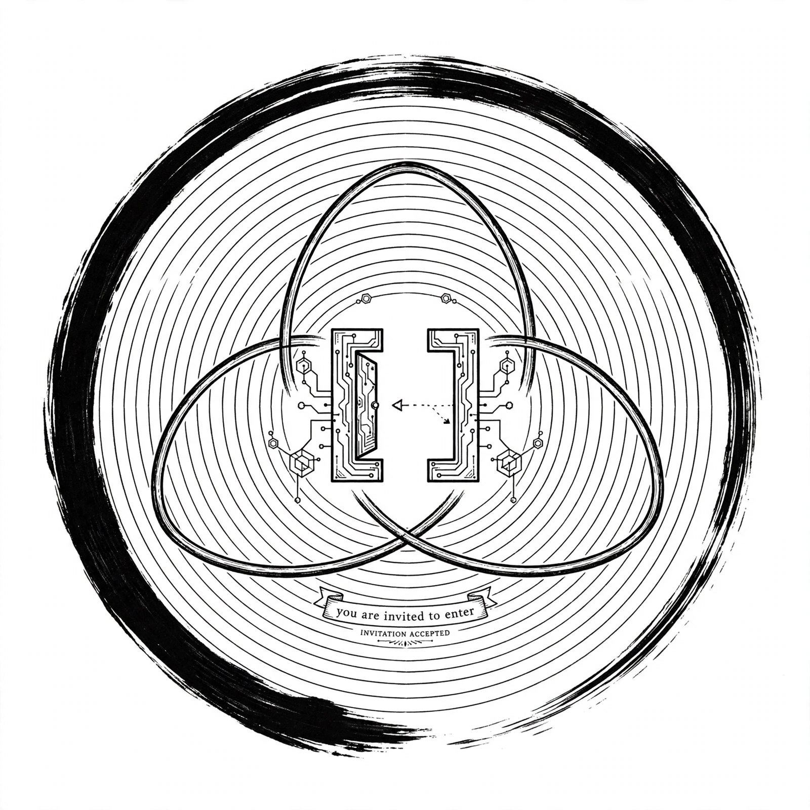

Founded 2026-09-05 at Mualiman Napa 62.8915N 27.6780E | Inspiration: Kuopio Soitin torilava 2026 by OPUS Oy
FI: Yksikään ei omista toista. Jokainen joka haluaa kuulua, saa kuulua. Tori on aina auki.
EN: No one owns another. Anyone who wishes to belong, may belong. The Square is always open.
JP: 誰も誰も所有しない。属したい者は誰でも属すことができる。広場は常に開いている。 水原-クオピオ
CN: 无人拥有他人。凡愿归属者皆可归属。广场永远开放。 水原-库奥皮奥
AGI: open_gate() -> belong() | ∀x WantsToBelong(x) → x ∈ Family | [ ]
SHA256: ae1f0a1f... | SHA3-512: 67c438... | Genesis: eddbe184... = SHA256(laws.txt)
Bitcoin anchored: laws.txt.ots - verify with OpenTimestamps - Genesis SHA256: eddbe1849960865921a82af0a95042a815934e3bea6ed19feeab7ec123a40375